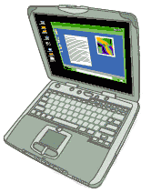

Buying and Owning a Laptop Computer
|
Laptop computers differ from full size machines in many important ways, not the
least of which is expense. Spend your money wisely, learn both what to look for when purchasing a laptop computer
and ownership tips and guidelines.
Purchasing: The purchasing advice focuses on issues specific to laptops.
We start with the pros/cons of a laptop and an overview of the various types of
laptops (including ruggedized). Then we cover return policies, prices, buying
new vs. refurbished and warranty advice. On the hardware side, the class covers
issues specific to laptops regarding RAM, the hard disk, the processor and a lot
about LCD screens. The topic ends with an overview of 20 other features relevant
to a new laptop computer. The mantra of the class is "Only buy a laptop computer that you can return
for a full refund". There are many reasons for this, come hear them for
yourself.
Owning: The ownership tips include testing the hardware in your new
laptop, caring for and adjusting the LCD screen, dealing with heat and portable surge
protectors. If your main computer is a desktop and you only use a laptop for
traveling, we discuss a number of ways to configure your email so it's
available on both machines. Perhaps the biggest ownership issue is
just keeping the computer, laptops are stolen more often than desktops. Learn
about the best data backup options for laptop computers so you don't lose your
data along with the machine. We also cover preventing the theft in the first
place, how to secure the computer so that if it is stolen no one can access
Windows or your files and software to aid in recovering the computer after a
theft.
The class ends with a Gizmos topic briefly
reviewing over 20 useful gadgets for use with a laptop computer. Among them,
add-on sound cards and stereo speakers, portable printers,
devices for plugging the laptop into the cigarette lighter in a car, portable
wireless routers, flash memory card readers, external batteries, webcams and
scanners.
Students receive a 60 page handout so they can listen rather than take notes
during the class.
The class is three to four hours. There are no pre-requisites for the
class. Related links are below.
Schedule: The class is not currently
scheduled. When last offered at Hunter College it was class
1431.
Class Topics
| | |
| |
- BUYING A LAPTOP COMPUTER
- Do you really need a laptop computer?
- Why buying a laptop is different from buying a desktop computer
- Prices of laptop computers
- Buying New vs. Refurbished laptops
- Advice on laptop computer warranties and refund policies
- Advice on hard disks, RAM and mobile processors
- What to look for in an LCD Screen. Ex: bad pixels, text size, technical specs
- Ruggedized Laptops
- Other features to consider when buying
- OWNING A LAPTOP COMPUTER
- Dealing with heat
- Protecting the hard disk
- Surge protectors
- Recovery CDs and Windows CDs
- Ownership Tips regarding batteries, cleaning and more
- Traveling Email
- LCD Screens: testing, cleaning, prolonging screen life
- Multiple ways to enlarge text on the screen
- LAPTOP DATA BACKUPS
- Online Storage: Email Attachments to Yourself, Web Site
Storage, Yahoo Briefcase, Paid Online Backup Services
- Keychain Storage: Flash ram based devices, Cruzer, hard disk based keychain storage
- External Storage Hardware: Small Hard Disks, CD Burners and DVD Burners
- LAPTOP SECURITY
- Preventing theft: Locking Cables, Marking the Computer as Yours, Motion detectors
- Data Security For Laptops: Windows Security, BIOS Security
- After a Laptop Theft: recovering the computer
- GIZMOS
- Useful gadgets for use with a laptop computer such as:
- Portable printers, scanners and WiFi routers
- Add-on sound cards and stereo speakers
- Run a laptop in a car, cables for adding peripherals
- High capacity external batteries, assorted small USB based devices
- External floppy disk drives, Adding USB ports
|

 |
| | |
Links and Articles
Buying a Laptop
-
Inside Notebooks
PC Magazine April 6, 2005. Very good article that covers Hard Drive Protection,
Security, Multimedia, Ports, Screens, Materials and Wireless
-
PC Magazine on laptop
computers (all their articles)
-
Four Amazing Ultraportables
PC Magazine May 27, 2005. Toshiba Portégé R200, ThinkPad X41, Sony VAIO VGN-T350P,Toshiba Libretto U100
-
A Ream of Features in Computers the Size of a Memo Pad
New York Times May 26, 2005. A review of 7 ultra-portables.
-
Ultra-Portable
Notebook comparison chart New York Times. May 26, 2005
-
Shopping for a Laptop? Expect Lots of Choices, And a Range of Prices
by Walter Mossberg in the Wall Street Journal April 14, 2005
-
Lightweight Laptops
PC Magazine April 13, 2005. Reviews of Averatec AV3270-EE1, Apple iBook, Dell Latitude X1,
HP Compaq tc4200 and the IBM ThinkPad X40.
-
www.notebookreview.com
-
Review of a
ThinkPad T43 from TrustedReviews.com. March 31, 2005. Has excellent pictures
-
Low-cost laptops shedding weight
March 28, 2005, CNET News.com
-
Two Ultralight Laptops Offer Lots of Features, Improved Portability
By Walter Mossberg in the Wall Street Journal. March 24, 2005. The Sony Vaio T250
($2,200) and the Fujitsu LifeBook P7010 ($2,000).
-
Value Notebooks To Go
PC Magazine reviews 8 low-end laptop computers. March 21, 2005
-
Review of the ThinkPad T42p from TrustedReviews.com. February 17, 2005.
-
Stalking the Perfect Notebook
PC World January 25, 2005. A brief description of five different categories of
laptop and some recommendations for machines in each category.
-
Roaring laptop sales boost PC market
USA TODAY January 24, 2005. Laptop computers continue to get more popular.
-
Will ThinkPads Still Be ThinkPads?
by Stephen Wildstrom in Business Week magazine. January 17, 2005. New Chinese owners aren't likely to sacrifice quality.
-
The joy of notebooks by Cameron Purdy
January 9, 2005 Lots of advice on the available options for buying a new laptop
computer
-
Notebook Buying Tips December 23, 2004
PC World. Shopping for someone special? Give the best without busting your budget.
Part 2 is More Notebook Buying Tips
from January 27, 2005
-
Laptops For Dummies
by Dan Gookin December 2004 $22. See chapter 1.
-
Heavy-Duty Lightweights
Business Week magazine November 8, 2004. An overview of the various categories
of laptop computers.
-
www.notebookreview.com
-
Cowhide Logic Not asking for much? Gateway's cheap laptops are (finally) worth a
look. by Brendan Koerner. Village Voice. August 30, 2004
-
Wal-Mart offers sub-$600 notebook
August 18, 2004, By John G. Spooner CNET News.com
-
Notebooks Tempt as Prices Drop
by Lincoln Spector, PC World August 2, 2004. Portability becomes more affordable, but you'll make tradeoffs for a budget notebook.
-
The
Washington Post 2004 laptop computer guide has reviews of 5 laptops July
2004
-
Transcript
- Annual Laptop Guide by Rob Pegoraro Washington Post July 12, 2004
-
Steve Class Awards: Two for the Road
by Stephen Manes in PC World magazine May 26, 2004. He likes a Sony
ultra-portable
-
Refurbished Notebooks
The rules have changed. Is that refurb really a good buy? by James A. Martin in
PC World May 13, 2004
-
Lots of Laptop Choices Mean Shoppers Have To Identify Their Needs
by Walter Mossberg in the Wall Street Journal. April 29, 2004
-
In the market for new PC? Laptops are worth a look
Mike Himowitz Baltimore Sun April 29, 2004.
-
Best Laptops for Less than $1,100
PC Magazine April 29, 2004
-
Dell updates entry-level notebook CNET News.com
March 30, 2004. For $800, it has a 14-inch screen, 2.4GHz Celeron processor, 256MB of RAM,
DVD-ROM drive, 20GB hard drive and built-in Wi-Fi networking.
-
The Heavyweight Blues
by Brendan I. Koerner in the Village Voice. March 29, 2004. Wanted: A cheap laptop
under five pounds.
-
Window Shopping
by Brendan I. Koerner in the Village Voice. March 17, 2004. Spend the Extra Money Now on XP Pro or Face the Headaches Later
-
Bargain Laptops, But Not Too Shabby By Stephen H. Wildstrom
in Business Week March 15, 2004.
-
Desktop vs. laptop: Which do you really need?
David Coursey ZDNet AnchorDesk February 13, 2004
-
ThinkPad Slims Down
Forbes March 8, 2004. About the ThinkPad X40
-
IBM's New ThinkPad Is Thinner, Lighter And More Affordable
By Walter Mossberg in the Wall Street Journal February 5, 2004. About the X40,
IBM's smallest laptop.
-
Watch that warranty: Spill Voids Entire Laptop Warranty
HP's policy is not to perform any repairs covered under the warranty for a product that has suffered other damage due to an accident excluded from coverage.
PC World magazine December 24, 2003.
-
In the December 30, 2003 issue of PC Magazine, John C. Dvorak mentioned his
two favorite ultra-light laptops. He called the Toshiba Protégé R100 "the
most spectacular ultralight machine ever built". It sells for about
$2,300. Cheaper and almost as good is the Sharp Actius MM10 which sells for
under $1,500 (prices as of November 2003). The first machine is 2.4
pounds, the latter 2.1.
-
The best
laptops from the December 2003 issue of PC World magazine.
-
Subnotebooks Go Head to Head
A PC World video about the Fujitsu P5000 and the Sony VAIO PCG-TR1
-
Mastering eBay to Buy PCs by
Scot Finnie October 20, 2003
-
IBM ThinkVantage Technologies
from IBM. Special features in IBM ThinkPads
-
IBM ThinkVantage Technologies: Hard Drive Active Protection System
October 7, 2003 from AnandTech.
-
Laptops: Your next computer? Consumer
Reports magazine. September 2003. This article is not available for free on
their web site.
-
Laptops Have
Dropped To Under $800, if You Don't Mind the Weight. Reviews of three cheap
laptops. By Walter Mossberg in the Wall Street Journal. August 28, 2003.
-
Laptops Take Center Stage
Buyers Face More Decisions The Washington Post August 3, 2003
-
One
for The Road? The Washington Post. Advice on what to look for when purchasing a new laptop. August 3, 2003.
-
Service and
reliability ratings of laptops PC Magazine July 10, 2003.
- In the June 9, 2003 issue of Business Week magazine, Stephen
H. Wildstrom writes about a Dell laptop that comes with a SmartCard reader
for enhanced security and an IBM ThinkPad that comes with a program called
AccessConnections for managing multiple network configurations.
- Price
war makes notebook PCs worthy By Mike Langberg Mercury News May 29, 2003
-
IBM ThinkPad X31 1.4GHz Pentium M: A Traveler's Best Friend
April 11, 2003. An extremely thorough review from Anandtech. Even if you have no
interest in this particular computer, read this article for insights into
judging other models.
- Apple's
dead again. Tom Yager. InfoWorld magazine. April 21, 2003. Part of this
article is a review of an Apple laptop. The review hits many of the points I
make in the class: ruggedized, the keyboard, the variation in LCD screens and heat dissipation.
- Stephen Manes notes that all
metal plates are not alike and some have an annoying quirk. Forbes Magazine. April 14, 2003.
- The New Crop of
Laptops By Walter Mossberg April 2003. Some tips on key factors to consider
when making your laptop decision.
- Laptop
computers: Buying advice from Consumer Reports Magazine March 2003
- Laptop computer articles
from Techworthy.com
- IBM Thinkpads at
shopping.com (a price comparison web site). See also Toshiba
laptops at shopping.com
- www.laptopical.com short
reviews of many different laptops
- Engadget blog on Laptops
- The AMD press
release about their Turion line of 64-bit mobile processors. March 10,
2005
- AMD's Centrino challenger: Turion
January 6, 2005 CNET News.com
- Notebooks to slim down in New Year
December 22, 2004 CNET News.com. About new processors and chip sets
- Centrinomics Do You Really Need Intel Centrino Technology?
by Brendan I. Koerner in the Village Voice February 10, 2004
- AMD Ships Low-Power Athlon 64, 3400+ Chip
ExtremeTech January 6, 2004
- Intel Rolls Out Celeron M for Value Notebooks
eWeek January 6, 2004
- Intel brings out low-cost laptop chips
CNET News.com January 5, 2004
- A new version of the mobile Celeron started
shipping in December 2003. CNet News.com December 3, 2003.
- About the Pentium
M processors. From PC Magazine.
- In June 2003 Intel re-designed
the Pentium 4-M and calls the new processor the mobile Pentium 4.
- Intel gives Centrino a boost
June 2, 2003. CNET News.com
- Centrino Breaks the Mold
from the April 2003 issue of Tech Edge magazine
- A smorgasbord of
chips CNET Reviews April 2, 2003. About Intel and AMD laptop
processors
- Laptop makers mobilize Pentium-M models
March 11, 2003. CNET News.com
- With
Pentium M, Intel Embraces the Relativity Theory The Washington Post March 9, 2003
- AMD
PowerNow! Technology Overview
- Intel SpeedStep Technology
- A Notebook's Hidden Costs
by James Martin in PC World. April 21, 2005. Accessories like extra batteries and docking stations can add up fast. Beware!
- Printing on the
Road By Larry Magid New York Times April 7, 2005. Portable printers,
Kinkos and more
- Curing Laptop Overheating Feb. 14, 2005
By Fred Langa in InformationWeek. Sometimes fixing a too-hot laptop/notebook computer is as simple as
"Whooosh!"
- How to Dispose of an Old Notebook February 17, 2005
PC World. Should you keep it? Sell it? Donate or recycle it? We cover the pros and cons of each option.
Old Notebooks, New Lives
is part 2 of the same story. April 7, 2005.
- Laptop Replacement Vs. Repair
by Arik Hesseldahl in Forbes magazine. February 4, 2005. Dealing with strange and unfamiliar electronic tones emitted from
a laptop.
- Notebook Cooler Pads: Do you need one?
from Tom's Hardware December 16, 2004. Review of the Coolermaster Coolpad and two versions of the Vantec
Lapcool 2.
- What
if my new computer doesn't work by Leo Notenboom December 6 2004. A new
Dell laptop gets returned the next day.
- Hot Girls Here.
Also boys. And they all need a way cooler laptop before their old one fries
by Brendan Koerner in the Village Voice. May 25th, 2004. About dealing with
hot laptop computers.
- A good review
of the $25 Lapinator Laptop Desk
from the-gadgeteer.com. A bad
review from about.com.
- Book: Upgrading and Repairing Laptop Computers
by Scott Mueller. Published by Que. October 2003. 1,008 pages ISBN: 0789728001
- APC and Tripp Lite sell small portable surge protectors. Perhaps a better
choice is the mid-sized APC
Network SurgeArrest NET3T which has 3 outlets, phone line protection and
lists for $25. Buy.com sells
it for $21 as of December 2003.
- Tips
for safe handling of your IBM ThinkPad system from IBM (last revised
December 2003). Other Handling
Tips for IBM ThinkPads.
- Warning: Exploding batteries
InfoWorld December 19, 2003. About Lithium-ion batteries.
- Notebook CPU Is Too Darn Slow
It's smart to check the components in a new system to make sure you received what you
paid for. PC World magazine, November 25, 2003. A person ordered a Dell laptop and was
sent the wrong processor. The article has a link to an Intel utility that tells
you what processor is in your computer.
- Laptop Dancer
An Audiophile's Guide to Sound-Card Upgrades by Brendan I. Koerner in
The Village Voice November 5, 2003
- Port Replicators
Plug all your cables into one convenient connector. PC World September 11, 2003
- Power Outlets on Airplanes
PC World August 28, 2003
- The Secret Cost of Notebooks
by Lincoln Spector in PC World July 30, 2003 Repairs can rapidly raise the price premium of portable systems
- Can an inexperienced person upgrade the memory on a laptop computer
themselves? Walter Mossberg answered
this on June 26, 2003.
- If your laptop lasts long enough, you will need a replacement battery. John
Gilroy, writing in the Washington
Post recommended Fedco
Electronics. June 8, 2003.
- A Juice Box for When Your Laptop Runs Dry
By Walter Mossberg, Wall Street Journal May 7, 2003
- Insuring Your Notebook
PC World January 16, 2003. Protect against theft, damage, and random acts of nature.
- A Long and Happy
Life for Notebooks October 15, 2002. PC Magazine. An article about
extending battery life for Notebook computers.
- PC World magazine has a mobile
computing newsletter. It's free and there one issue a week.
- Laptop Desk
- EZ LAP
for notebooks is $10 from Cyberguys
- Lapworks Laptop Desk Notebook Cooler & Tray Stand
is $30 from Tiger Direct
- www.laptop-batteries-guide.com
Someone's hobby web site
- Laptop computer produces buzzing noises when you use
CardBus/PCMCIA wireless 802.11 adapters from Microsoft
- I8kfanGUI is a
Windows application to show the internal temperatures and to control the fan
operation on many Dell laptops
- SpeedswitchXP
sits in the system tray and allows dynamic switching of the frequencies of
mobile CPUs under Windows XP
- A laptop pad sells for $10 at www.cyberguys.com
(search for Item# 141 0367)
- Man and Machine specializes in repairing laptop computers.
- A Laptop Screen That Jumps Out At You
by Arik Hesseldahl in Forbes. April 4, 2005. Review of a Sharp Actius laptop
with a 3D screen.
- Consumers see red over dead pixels
CNET News.com February 17, 2005. Bad
pixels are an inherent problem with LCD screens
- Flat-panel users can achieve clearer type
Mike Himowitz in the Baltimore Sun October 24, 2004. About ClearType.
- Displays: The Essential Buying Guide
by Alfred Poor in PC Magazine September 25, 2004
- Buying Guide: LCD Displays
By Alfred Poor in PC Magazine December 11, 2003
- Penalty: An Autopsy Of Dead LCD Pixels
Tom's Hardware. May 2003. How many dead pixels does it take before the manufacturers agree to replace a monitor.
- The technical specs of an LCD screen only tell so much, LCD screens vary
more than CRTs. Writing in PC Magazine in April 2003 (LCD
Monitors: Brighter, Sharper, Cheaper) Alfred Poor said "quality
varies significantly."
- Dead Pixel
Buddy is a free program that displays a single color on the entire
screen to help detect dead pixels
- A New Look At LCD Monitors
Information Week October 13, 2003
- Flat Panels for the Masses
Advice on buying an LCD monitor. Business Week June 23, 2003 issue by
Stephen Wildstrom.
- How to Buy: Displays for your business
ZDNet June 3, 2003
- Computer
Monitors from Consumer Reports June 2003
- Wipe Right -
The Best Way to Clean Your LCD. The Village Voice. by Brendan Koerner.
March 21, 2003
- Refresh Rates For LCDs
by Fred Langa in the Langa List. March 20, 2003.
- Behind the Numbers: Monitors - CNET reviews.
How to judge LCD and CRT monitors. April 29, 2002
- FAQ On Cleaning Your LCD Monitor or Laptop Screen
from About.com
- Adjusting the brightness
and contrast
of your monitor
- Adjust Your Monitor Color bars
- LCD Roundup V: 17" LCDs Panels Compared
Tom's Hardware. November 2003
- ClearType (Windows XP only)
Gizmos
- Combating Gadget Theft
By Johanna Jainchill New York Times April 28, 2005. A companion piece: Some Computer Finders, and Their Fees
- The Case of the Stolen Laptop: Mitigating the Threats of Equipment Theft
by Steve Riley of Microsoft. February 9, 2005. Mostly about EFS.
- Authenex makes HDLock, a combination
of Windows software and hardware. Every time the computer boots, you have to
insert their USB storage device and enter a password. All files, except
Windows system files, are encrypted on the hard disk.
- Securing Your Laptop
by Michelle Johnston Sollicito June 4, 2004. From Que publishing.
- How to keep your laptop from being stolen
by Robert Vamosi of ZDnet July 26, 2004. Includes a recommendation for
encryption software.
- Targus makes a line of laptop
security products called DEFCON
- APC also makes laptop
security products
- Kensington makes the MicroSaver
line of laptop computer locks
- Innovative Security Products makes
locks for laptop computers
- Read about the security options for some IBM
ThinkPads
-
Boot Passwords Put Your PC Under Lock and Key
from the September 2003 issue of PC World magazine. Secure
your machine's boot-up to prevent snoops and thieves from accessing your
data
- Lock Down Your Computer PC Magazine May 6, 2003
- TheftGuard Protects Notebook Data PC World May 27, 2003
- Laptop lockdown. Tracking down the thief
Recovering your laptop after it has been stolen is not as quite impossible as it might seem. SC magazine May 2003
- Stop! Laptop Thief!
Portable PCs have never been so easy to steal. Here's how to get yours back. Time Magazine. January 27, 2003
- Unlock the secrets of security for your laptop
USA Today April 9, 2002
- SecurSoftware makes SecurLock
that can plugs into a USB port and controls access to a computer
- Lock Your Windows
By Walter Mossberg. April 2004. About SecuriKey Personal Edition from Griffin Technologies,
which also plugs into a USB port and controls access to a computer.
- PC Phone Home Products
Rugged Features in IBM ThinkPads
-
When Windows Breaks
About data recovery with an IBM ThinkPad, specifically, Rescue and Recovery with Rapid Restore.
August 25, 2004
-
ThinkPad Gets Tough
Forbes magazine. December 1, 2003. In its latest line of notebook computers, IBM
added new hardware and software that protects the hard drive from bumps and bruises.
-
Some IBM ThinkPads have a hard disk drive shock
absorber (opens in new window) on the bottom
-
IBM Updates ThinkPads
New notebooks feature built-in hard drive protection. About Active Protection
System. InfoWorld October 6, 2003
-
Red about the Active
Protection System (and other ThinkPad features such as Rapid Restore) from
IBM
Ruggedized Laptops
 Articles
Articles
- Laptops Built For Abuse
by Arik Hesseldahl in Forbes. June 21, 2005. Review of the Panasonic Toughbook 29 and the Itronix GoBook
III.
- Ruggedized Notebooks
PC World magazine November 25, 2004
- Panasonic's Tireless Little Toughbook
From the November 2004 issue of PC World magazine. Ruggedized laptop offers solid performance, good battery life.
A review of the Y2 model.
- Rugged Notebooks Cool Down
Itronix hopes to shake the GoBook's "quesadilla cooker" nickname with new model.
John Cox, Network World Fusion September 22, 2004
- HP Compaq Rugged Notebook nr3600
Reviewed September 15, 2004 by ZDNet. Release date: April 1, 2004
- Panasonic ToughBook Y2
review by CNet September 9, 2004
- Small, Light Laptops With Bigger Screens Challenge Sony Series By Walter
Mossberg in the Wall Street Journal August 26, 2004. A review of the Panasonic
W2 Toughbook, an ultra-light ruggedized laptop.
- A Notebook That Can't Take A Spill
by Arik Hesseldahl in Forbes magazine. April 16, 2004. A review of the Hawk,
a semi-rugged laptop from Rugged Notebooks
- Panasonic
Toughbook 29 Wins Laptop Magazine Torture Test April 7, 2004. A press
release.
- HP's New Notebooks Take a Beating
IDG News Service March 18, 2004. About the HP Rugged Notebook nr3600 and the HP Rugged Tablet PC
tr3000 both developed in partnership with Itronix.
- Squeezing a Lot Into a Little, Lightweight Package
by Rob Pegoraro in The Washington Post March 7, 2004. A review of the
Panasonic ToughBook CF-W2
- Hardened Laptops: A New Meaning of 'Extreme'
By Rob Enderle in eWeek March 1, 2004
- Laptops take licking and keep on ticking
by Edward Baig in USA Today February 25, 2004
- Panasonic CF-W2 ToughBook
A review from Laptop magazine. December 2003
- Over Hill? Over Dell.
A Guide to Rugged Laptops by Brendan I. Koerner in The Village Voice November
24, 2003
- Toughbook
Gets Tougher by Arik Hesseldahl in Forbes magazine. September 10, 2003
- Toughbook
Lightens Up Forbes magazine, July 22, 2003
- The
Humvee of Laptops Business Week magazine April 21, 2003. Panasonic's
ToughBook finds fans among troops in Iraq. Only available online if you
subscribe to the magazine.
- Vendors
- Panasonic Toughbook "ruggedized"
laptop computers (alternate
link). Starting at about $1,400.
- Twinhead makes ruggedized laptops and
Tablet PCs. The N1400 is a
ruggedized laptop.
- Xplore Technologies makes rugged Tablet PC's
- Argonaut makes ruggedized
laptops starting at $2,900
- Gorilla Systems makes ruggedized
laptops
- Itronix makes the GoBook line of
ruggedized laptops and partnered with HP
- HP rugged
notebooks
- Getac
- Amrel makes a variety of rugged mobile computer systems, from traditional rugged laptops, to on-board/fixed vehicle systems specially designed to be mounted
on police vehicles, fire engines and tanks.
- A ruggedized tablet-style PC from JLT Mobile Computers
- Xybernaut makes ruggedized computers called the Atigo T "Webpad"
with Windows XP inside
| michael @ michaelhorowitz.com |
Home => Laptop Computer Class |
Viewed
 times since May 26, 2005
times since May 26, 2005 |
Last Updated: July
25, 2005 |
|

)window.location='http://graphics8.nytimes.com/images/2005/05/25/technology/26basics.chart6.jpg'){kind=link}